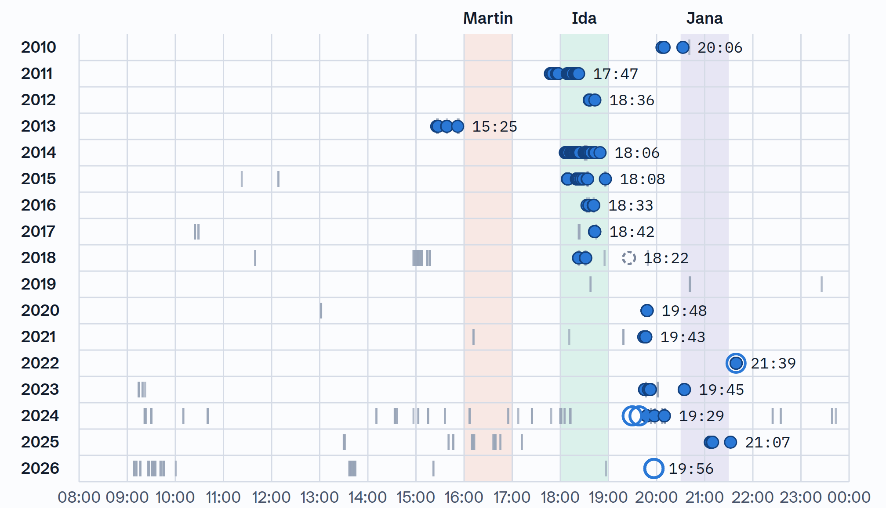
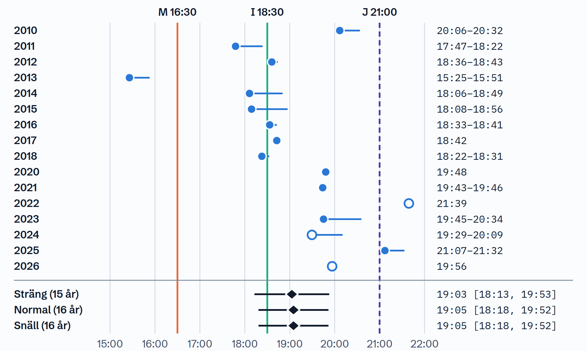
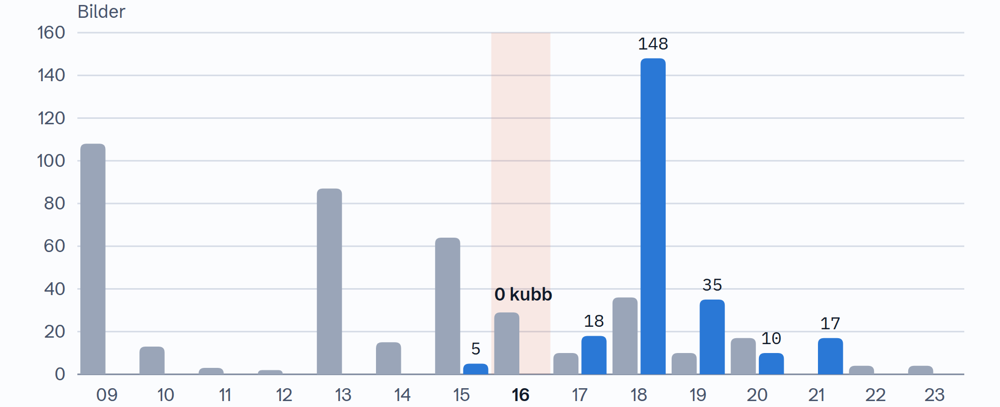
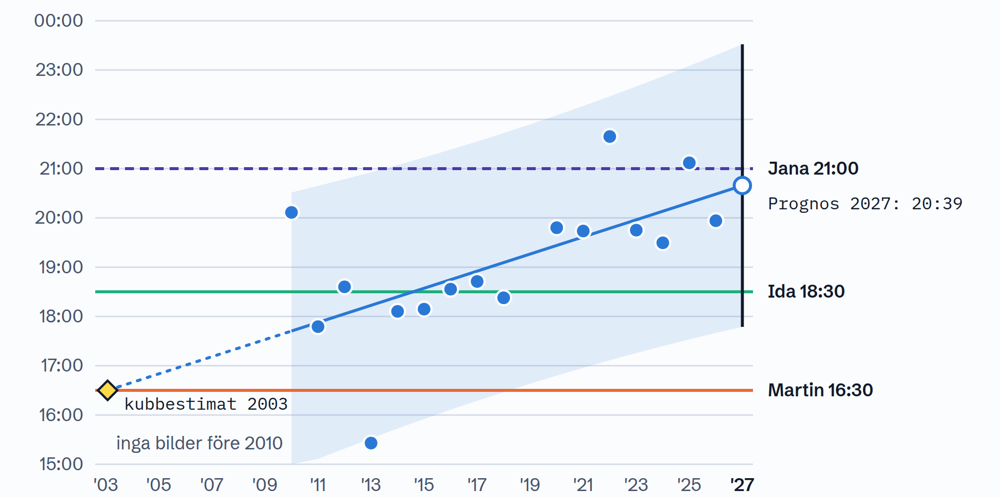

Tidskrift för icke upprepbara midsommarresultat · Storbildsutgåvan
När börjar kubben egentligen?
En onödigt grundlig utredning av sjutton midsommaraftnar, gjord för att avgöra en dispyt
M. Olsson och Claude · Bildbevis: Martin och Jocke · Granskad av: ingen
Dispyten: när spelas kubben?
Martin
16:30
”Alltid vid fyra–fem.” Beställde studien för att få rätt.
Ida
18:30
Sade först ”vid sju”. Ändrade sig sedan till halv sju.
Jana
21:00
Säger nio. Senast av alla, och ensam om det.
Alla var mycket säkra. Ingen hade kollat.
Så mätte vi
17
midsommaraftnar, 2010 till 2026
824
bilder och filmer, ur Martins fotoarkiv och Jockes kamera
233
av dem visar kubb. Vi tittade på varenda en.
Årets första kubbild = då är kubben senast igång.
Varje utomhusbild, varje midsommar

Så läser du bilden
En rad per år, klockan längs botten. Klockslaget på raden är årets första kubbild.
Kubbild
Kubbplanen, inga pjäser syns
Annan utomhusbild
Martins timme, 16–17
Leta gärna efter en blå prick i det orange fältet. Ta den tid du behöver.
Svaret
19:05
Då är kubben senast igång, i genomsnitt.
Felmarginal: någonstans mellan 18:18 och 19:52.
Ida, 18:30
35 min fel
Jana, 21:00
1 tim 55 min fel
Martin, 16:30
2 tim 35 min fel
Av 233 kubbilder är inte en enda tagen mellan 16 och 17.
År för år, och alla år ihop

Så läser du bilden
Varje blå prick är ett års första kubbild.
Det blå strecket går fram till årets sista kubbild. Långt streck: någon fotade kubben länge. Inget streck: alla bilder togs inom någon minut.
Martin, 16:30
Ida, 18:30
Jana, 21:00
Svarta rutor längst ner: genomsnittet räknat på tre sätt, med felmarginal. Bara Idas linje går igenom.
Prispallen: vem låg närmast, år för år?
Jana
6
midsomrar
Ida
9
midsomrar
Martin
1
midsommar
Martins enda seger kom 2013. Då togs första kubbilden 15:25, och han låg ändå över en timme fel.
Så mycket tur behöver man för att ha rätt
Att ha rätt trots bilderna är lika svårt som att singla krona så här många gånger i rad.
Ida
2 i rad
Händer 13 gånger av 100. Fullt möjligt.
Jana
13 i rad
Händer 1 gång på 10 000.
Martin
17 i rad
Händer 1 gång på 260 000.
17 i rad händer en gång på 260 000. Martin får gärna försöka nu.
Medan Martin väntar på kubben
Martin gissar 2 tim 35 min för tidigt. På den tiden hinner man det här.
232
varv av ”Små grodorna”
12,9
kilometer promenad, i lugn takt
6
femkilometerslopp i Martins takt, 26 minuter styck. Nästan: när kubben börjar har han knappt 200 meter kvar av det sjätte.
0,72
av avståndet till månen. Så långt, 277 000 km, flyttar sig jorden i sin bana runt solen under tiden.
Över sexton midsomrar har han väntat 41 timmar på en kubb som inte hade börjat.
Men tänk om ingen fotar vid fyra?

Så läser du bilden
Utomhusbilder per timme, alla år ihop. Timmen står under stapeln.
Kubbilder
Andra utomhusbilder
Martins timme, 16–17
Mellan 16 och 17 togs 29 bilder. Ingen visar kubb.
Kameran var framme. Den såg ett partytält, en hund och en ballongtävling.
Kubben blir senare för varje år

Så läser du bilden
Varje prick är ett års första kubbild. Strecket lutar uppåt drygt 10 minuter per år.
Skuggat fält: felmarginalen. Ringen till höger: prognosen för 2027, 20:39.
Prickat streck: strecket draget bakåt. Gul ruta: kubbestimat för 2003. Där finns inga bilder.
Fortsätter det så här börjar kubben vid midnatt år 2046, och är då rent tekniskt flyttad till midsommardagen.
Draget bakåt når strecket 16:30 år 2003. Martin har alltså inte fel. Han är bara 23 år sen.
Forntiden: hur ofta börjar kubben 16–17?
Enligt Martins egna bilder
20 096 år
mellan gångerna. Senast omkring år 18 070 före Kristus, då Sverige låg under flera kilometer is.
När Jockes bilder kom in
17 år
mellan gångerna. Istiden är avblåst.
Martins egna bilder var hans värsta fiende.
Sådant som kan tala emot oss
Kameran, inte kubben
En bild visar när någon tog upp kameran, inte när första pinnen kastades. Kubben var igång senast då, kanske tidigare.
Ny fotograf
Jockes år ger första kubbild 18:12, Martins 20:13. Antingen har kubben flyttat sig, eller så tar Martin upp telefonen två timmar senare.
Handställd klocka
Jockes kamera 2011–2016 ställs för hand. Går den en timme fel, går de åren en timme fel.
Statistiken kan inte avgöra det. Det kan bara den som var där.
Domen
Kubben är igång senast 19:05.
Ida säger halv sju. Ida vinner.
Hon missar med 35 minuter. Hade hon stått kvar vid sju hade hon missat med 5. Jana missar med 1 tim 55 min och Martin med 2 tim 35 min.
Rekommendationer
Martin
erkänner, helst i visform. Melodi: ”Helan går”.
Ida
får fira, men bör sluta ändra sig medan hon leder.
Jana
bör inte ge upp. Hon bör vänta, ungefär till 2029.
Jocke
bör tackas. Utan hans kamera hade vi fortfarande trott på istiden.
Alla
kallar hädanefter 19:05 för Kubbnormaltid, KNT.
Nästa mätning: midsommarafton 2027, ungefär 20:39. Ta med telefonen.
Källor, och hur vi kom fram till det här
Bilderna
620 filer ur Martins fotoarkiv i tjänsten Ente. 204 bilder och filmer från Jocke, 2010–2018.
Hämtningen
Entes hämtningsprogram kan bara hämta allt på en gång. Det är öppet för vem som helst att ändra, så vi lade till ”hämta bara de här datumen” i kopian på Martins dator.
Räkningen
Vi läste av kamerans klockslag, tittade på varenda bild och räknade med ett eget program som kontrolleras av ett femtiotal automatiska prov.
Inga bilder visas. De ligger kvar hos Martin; här finns bara klockslag.